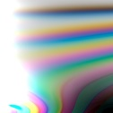
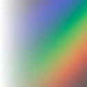
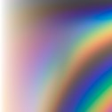

sdPBRのマテリアルの作り方について説明します。
実例3：褐色肌にする … 褐色じゃなくても良いお肌作りに役立つ！既存のマテリアルの書き換える簡単な例
実例5：動画テクスチャ … MMDの背景動画や画面自体をテクスチャとして使う
実例7：楽しいマテリアル …拡張シェーディングモデルについての補足
物体の材質の事です。特にPBRの考え方で作られているシェーダを使うと頻繁にこの言葉が出てくると思いますが、 「MMDの標準のシェーダを使ってるだけなら全く意識しなくてよかったのになんかめんどいな…」 「材質ならモデラの人が決めてくれているのに二度手間じゃない？」 と思うのが正直な所だと思います。
MMD標準のシェーダを使う分にはMMDモデラ諸氏が工夫と熱意を凝らしてモデルに適用される質感がそのまま表現されるので それで問題が無いのですが、sdPBRではシェーダ側へ材質をより細かく指定するための追加の指示を行う事で、 幾らか良好な「質感」を得ることが出来ます。質感というのはなかなか難しい言葉ですが、ここでは「それらしい、良さげな見た目」とでも 捉えていただければいいんじゃないかと思います。
質感の向上をモデリングやテクスチャワークだけでやろうとするとモデリングはバッチリやった上で細かいテクスチャの書き込みを周到に行い、 さらに意図通りの見た目が得られるカメラアングルと照明を設定して…などなど大変な職人芸が要求されます。 そういうのこそシェーダが自動的に計算してそれっぽくなればラクそうじゃないですか？ でも、シェーダ側としては、あなたが「よさげなミクさんのツインテールにしてくれ」と思っているのか「よさげな縞パンの布地を描いてくれ」と思っているのか分からないとミクさんが縞パンのツインテールをぶら下げて、下半身には豊かなフサフサが生い茂ったりするわけです。これでは困りますよね？却って嬉しいですか？困ったなあ…
そこでシェーダに「これはツインテールだから髪っぽく描いてくれ」といった指示書に当たる物がマテリアルなのでございます。sdPBRでは、1種類のマテリアルをmaterialフォルダのさらにもう1つ下のフォルダに分けて配置された1つの.fxファイルで表現します。
口絵は(｀・ω・)様作 明石改をお借りしました。ニコニ立体で公開されています。この例では艤装を金色にしてみました。
頑張ってマテリアル作りをしようと思っている貴方が知っておくべき、耳より情報がございます。
マテリアルは1から完全に自作できなくても構いません。sdPBRには最初から数十種類のマテリアルが付いており、それらを改変して作った物についてはsdPBRの作者である僕は何の権利も主張しませんし、義務も負いません。付属のマテリアルに使われているテクスチャのライセンスはほとんどがCC0またはパブリックドメインの物であり、安心して再利用することができます(各ファイルについてのライセンスや出典については各テクスチャのディレクトリ下に納められています)
ちなみに、居ないとは思いますけど、このマニュアルの口絵を再利用するのは禁止です。それらは二次創作に基づいた画像などが含まれるためです。本マニュアルの口絵の作成に当たっては関係各所の公表する二次創作ガイドラインや、二次創作物の利用規約を遵守しておりますが、本マニュアルの口絵をさらに再利用した結果、一次創作・二次創作物製作者の方々とトラブルが生じても、sdPBRの作者は一切責任を取りません。
マテリアルを思い通りに作れるようになったからと言って、それだけで貴方の思い描く絵作りができるのかというと、決してそうではありません。絵作りにはマテリアルも確かに大事なんですが、むしろ照明やポストエフェクトの方が大事です。少なくとも、僕自身はsdPBRの作例動画を作った際、その動画専用として新しくこしらえたマテリアルが0個だったという事も珍しくないです。しかし、照明やポストエフェクトの構成は毎回その都度考えています。ですから、追加ライトやskyboxといった照明(skyboxは照明の一種です)の正しい使用方法を掴んで、sdPBR付属のマテリアルでは満足できなくなったら、「じゃあ、マテリアルのいじりでも調べようか」という感じで進むのが順序としては理想的であると思います。
照明の方法についての具体的な手引がsdPBRのマニュアルには含まれていないんですが、それは僕には人に教えられるほど照明についてのノウハウがあるわけではないからです。そういう知識は写真や映画やゲーム美術などの専門家によるノウハウが成書として数多く出ている訳ですから、僕のような素人の知ったかぶりにわざわざ騙される事はありません。
ともあれ、sdPBRはシェーダの名前が示すとおり、Physically Based Renderingという考えに則って作られており、マテリアルの作成を通してPBRの初歩的な知識が身に付きます。マテリアルの書き方自体はsdPBRの中でしか通用しませんが、PBRについての知識はMMDから離れても、blenderやUE、UnityといったモダンなCG・ゲーム制作のためのシステムに移っても、ほぼそのまま通用しますから、とても役に立ちます。もしかしたら一生の宝に…なったらいいですね！
良し悪しが分かったところで、マテリアルの作り方についての説明を始めましょう。
この文書ではマテリアルの全部のパラメータの解説はしません。主要なパラメータだけかいつまんで説明しつつ、実際に皆さんがマテリアルファイルを作成できるようにするのがこの文書の目的です。
リファレンスはmaterial/説明 フォルダに入っていますので、全パラメータの一覧を知りたくなったらそちらを見てね！
さて、マテリアルの作り方の最初の実例ということで、まずは金玉を作ってみましょう。作りたくないかもしれませんが、金玉すら作れないのに華麗なマテリアルを作ることは出来ません。千里の道も金玉から！
MMDを起動して、マテリアルいじりを始められる状態を整える方法から説明しましょう。
この時点でサッパリ分からないという場合は最初のチュートリアルから読んでね！
実はsdPBR付属のskyboxって公開されているHDR画像をそのままskyboxとして使えるよう変換しただけなので、普通に絵作りをするためにはちょっと明るすぎたり暗すぎたりする事が多いですから、sdPBR.pmxの環境色モーフをいじって適宜調整してください。
今回は、skybox_indoorを使います。それから、sdToneMapperを入れて普段の色調に整えます。普段使ってないかもしれませんけどとりあえず入れとくといいですよ？さらに今回の教材をドロップしましょう。
tool/sphere100.pmxというのが今回、金色にしたいタマタマであるわけですが、他に金色にしたい物があったらいつものお気に入りモデルとかでもいいです。これに、MMDの右上のMMEffectメニューにある「エフェクト割当(M)」でダイアログを出して、sphere100.pmxにmaterial/controllable/sdPBR_controllable.fxを割り当てます
これだけでも白磁のようにツルツルしてていい感じですが、これをあろうことか金玉にします。MMDの画面下段真ん中右寄りの「表情操作」パネルの中の左上、目モーフの項目を見てみましょう。こちらの「metallic」パラメータをガッと上げて1.0にしてください
パチンコ玉みたいになりました。metallicパラメータで物体の金属っぽさを指定できます。PBRでは金属かそうでないかという分類がまず最初に来ると言っても過言ではないくらい大事な項目です。金属(metallic=1)か非金属(metallic=0)かで物体の表面に当たった時の挙動は大きく異なります。
とりあえず金属かそうでないかの二択なので、このパラメータは基本的に0か1で指定します。0.5とか中途半端な値が入るのは錆びた金属とかの例外であるという事は押さえといて頂きたいと思います。
次に、金色にしてみましょう、色を変えるのには名前通りですがbaseColorを変えます。金のbaseColorは R=1.00, G=0.77, B=0.34くらいにすると丁度いいそうですから、baseColorR,G,Bにそのまま入れてみましょう。
後で説明しますが、baseColorは反射率を表しているので、1以上の値になる事は基本的にあり得ません。1以上にしないと暗いんだけど、という時はマテリアルではなくライトを明るくすべきです。
おっ、いきなりリッチな気分ですね。baseColorパラメータはとりあえずRGB値を入れる事に間違いはないんですが、普段みんなが使っているRGBの値とはちょっと違い、リニアRGBで指定します。PhotoshopやMSペイントのスポイトツールで出てくるお馴染みの0～255のあの値を255で割った値では無くて、その値を更に2.2乗した値になります。
使い勝手のため、コントローラのbaseColorR,G,Bを全部0にセットした場合、デフォルトの値としてモデルの材質に元々設定されていたマテリアルの色やテクスチャから算出された値が自動的にセットされます。baseColorR,G,Bのどれか一つでも0以外の値になっていればコントローラで設定された値になります。
まず、いつも使っているRGBの値であるガンマ補正後のsRGB輝度信号(以降、「ガンマsRGB」と書きます)というのは、実は実際に画面に点けられるドットの輝度と比例してないんです。ガンマsRGB値はテレビがブラウン管だった時代に、ブラウン管に掛ける電圧と関係のあった値なんです。だから、輝度値、輝度値、とガンマsRGBで表現された数値の事を呼んでたことがあるかもしれませんが、オマエタチの輝度は本物の輝度じゃなくてブラウン管の電圧に比例した値だったんです。
確かに、輝度にキッチリ正比例ではなく、約0.45乗に比例した値というのは感覚的に使い勝手の良い面もあって長い間愛用されているのですが、物理ベースレンダリングにおいては物理学の単位としての輝度[W/sr/m^2]や反射率と比例した値の方が何かと都合がよいです。そういう実際の輝度と比例したRGB色空間の事をリニア色空間(リニアRGB)と呼びます。sdPBRのマテリアルには基本的に色に関するパラメータはリニアRGBで入力します。ガンマsRGB値を2.2乗しただけなので厳密に比例しているわけでもないんですが、現状ではこういう近似をして計算する例が多いのでsdPBRでもそれにならっています。
ところで、コントローラからbaseColorに0.01を指定しても意外と明るいと思うかもしれません。リニアRGB値はガンマsRGB値を2.2乗した値なので、リニアRGB値を2.2の逆数である0.45乗するとガンマsRGBに変換できるんですが、0.01の0.45乗は0.13であり、0.13 x 255 = 32になります。0.01しか設定してなくても結構明るいんですね。ちょっとどころではなく使い勝手が悪いかもしれませんが、ガンマsRGB値でいう32/255未満の輝度にしたい場合は数値の直接入力で賄ってもらうしかございません、はい。
さて、立派な金玉になりましたが、もうちょっとリアリティが欲しいですね。ここまでツルツルテカテカの金玉というのはちょっと嫌味があるというか、ここまで研磨しなかった金玉だってあるでしょう。そこで、roughnessパラメータを使って金玉の磨かれ具合を調整できます。スライダーを適当にいじって好きなroughnessにしてみてください。以下の絵では0.5を指定してみました。0～1が有効な範囲です。特に断り書きが無い限り、パラメータの値は0～1の範囲で指定します。
roughnessパラメータによって表面の粗さを指定できます。これは金属・非金属に共通のパラメータです。テカり具合の反対と捉えていただけるといいんじゃないかと思います。specularといういかにもテカりに関与しそうなパラメータもありますが、これについては次のマテリアルの説明でやります。
ここからが重要な所です。コントローラでオリジナルのマテリアルを作るのはいいんですが、コントローラはわざと1つしか用意してません。なるべく作ったマテリアルをファイルにして欲しいからです。今は細かく話しませんが、まあ、色々とコントローラにもダメなところはあるんだよ…うん。
そんなわけで、まず、materialフォルダに行って、customフォルダを作りましょう。(フォルダ名は何でもいいですけど、shaderフォルダから見た時の階層の深さをそろえる必要があります)既に作ってあるかもしれませんが、そういう場合は落ち着いてcustomフォルダの中に入っているテキストファイルを読んでみてください。
で、メモ帳などで以下の文章をコピペしてcustomフォルダ内にkintama.fx という名前で保存します。一文字ずつ写経してもいいですけど、ほとんどお約束部分なのでコピペでいいです。
#define SDPBR_MATERIAL_VER 100
#include "../../shader/sdPBRMaterialHead.fxsub"
void SetMaterialParam(inout Material m, float3 n,float3 l, float3 Eye, float2 uv)
{
m.metallic = 1;
m.baseColor = float3(1.00,0.77,0.34);
m.roughness = 0.5;
}
#include "../../shader/sdPBRMaterialTail.fxsub"
kintama.fxをsphere100.pmxに割り当てて、エラーが出ないか確認してください。全角スペースが混入してたりするとエラーがでます。
この.fxファイルの意味なんですが、各行ごとに説明すると以下のような調子です。実は大半は毎回コピペで使いまわせる、お約束部分なのでそんなに怖く無いです。
#define SDPBR_MATERIAL_VER 100 //お約束なので、コピペしよう
#include "../../shader/sdPBRMaterialHead.fxsub" //お約束なので、コピペしよう
//↓の行もコピペでOK。SetMaterialParamという関数を定義する事でマテリアルの内容をシェーダ本体から知ることが出来ます。
void SetMaterialParam(inout Material m, float3 n,float3 l, float3 Eye, float2 uv)
{
m.metallic = 1; //mという変数の下に.(ピリオド)付きでパラメータがあるのでそれを書き換えます
m.baseColor = float3(1.00,0.77,0.34); //float3(x,y,z)という関数で色(r,g,b)のように3つ要素のある変数を作ります
m.roughness = 0.5;
}
#include "../../shader/sdPBRMaterialTail.fxsub" //お約束なので、コピペしよう
.fxファイル内の//から行の終わりまでと、/* ～ */で囲った部分はコメントとして見なされるので大体何を書いてもエラーにはなりません。値の注釈なんかを入れておきたい時はご利用ください
このようにシェーダの一部を露骨に書いてもらう事でマテリアルを定義するという乱暴な話になってますが、HLSLというシェーダを書くための言語がそのまま使えるので何かと都合が良いんです。
お約束部分を除くと金玉マテリアルを定義するのに必要な部分は、以下のたった三行だけという事になります
m.metallic = 1; m.baseColor = float3(1.00,0.77,0.34); m.roughness = 0.5;
このように、m.なんとか、という値がマテリアルの個々のパラメータを表しており、それを書き換えてやることで、様々なマテリアルを作ることができると、そういう仕組みになっているのです。
さて、うまくできましたでしょうか？この作例では
以上について見ていきました、次の作例では簡単なHLSLプログラミングを交えつつ服の色合い(色相)だけ変える方法についてご説明します
次は、服の色を変える実験をしてみましょう！
金玉を作った後の状態からsphere100.pmxを削除(隠すだけでもOKです)して、MMDユーザなら誰もが持っているモデルという事で、MMDに付属のあにまさ式メイコさんをお借りしましょう。c:/MMDにMMDがインストールされている場合、c:/MMD/UserFile/Model/咲音メイコ.pmdがそのファイルとなりますので、そちらをMMDへドロップしてください。なんでミクさんじゃなくてメイコさんなのかというと、服が赤いので説明に都合がよいのです。ミクさんの服ってグレーなんだもん。
とりあえずメイコさんを読み込んで、適当にsdPBRのマテリアルを割り当てます。ここではオススメの肌マテリアルであるmaterial/body/skinEX.fxを割り当てました
次に、服のマテリアルを編集できるようにしましょう。エフェクト割り当てダイアログで咲音メイコを右クリックするとコンテクストメニューに「サブセット展開」があるのでそれをクリックすると、メイコさんの色んな材質を別々に変更できます。メイコさんの場合は3番の材質が上着やスカートの材質ですから、これにさっきのコントローラ用マテリアルであるmaterial/controllable/sdPBR_controllable.fxを割り当てます。
服が金玉金ピカになりました。ダーティペアみたいでカッコいいですね(年がバレる)
これを色々好きにいじればいいんですが、今度は金属じゃなくて、もうちょっと服っぽい雰囲気にしてみましょう。sdPBR_controllable.pmxのモーフを全部、具体的にはbaseColor, metallic, roughnessを一旦0に戻しましょう
metallicが0になったので今度は非金属の場合の話になります。roughnessも0にしたので究極ツルテカ状態なんですが、金属の時と違ってあんまり派手に映り込みがありません。specularパラメータを0.5まで上げてみましょう。映り込みが金属ほどじゃないにしても良く分かるようになってきます。
specularパラメータは非金属の場合の鏡面反射率と関りがありまして、specular=0の時、入射角0度における鏡面反射率(F0)は0%、specular=1の時、8%になります。ほとんどの(反射を考えないといけないような)物質のF0は4%前後であり、specular=0.5を代入しておけば大体OKらしいのですが、およそ自然に存在する(反射を考えないといけないような)物体は2%から8%の範囲なんだそうです。specularパラメータも0～1の範囲が有効な値です。
specularパラメータというのは実は屈折率と関係のあるパラメータでダイヤモンドなどのように屈折率が高い物質ほどspecularも高い値になり、キラキラした鏡面反射を起こしやすいという事になります。金属の場合はspecularパラメータは無視されます。金属の場合、鏡面反射率はbaseColorで決まり、拡散反射率は常に0だからです。
specularパラメータは屈折率から求まるので、現実のどんな材質に相当するモノなのかを決めた時点でちょっと調べれば屈折率は分かりますから、specularパラメータを半自動的に決める事が出来ます。
ところで、自然界にほぼ存在しないはずのF0が2%未満の物質も、specularを0.25未満とか金属の場合はbaseColorを0.02未満にセットすると普通に作る事が出来ます。この状態にするとsdPBRは内部的に「この物体は鏡面反射の特別少ない物体なんだな」という事でグレージング角における鏡面反射率(F90)も低くなるよう補正を掛けるようになります。これも僕独自のアイディアではなくてEAのFrostbiteエンジンがPBR化された際のSebastien Lagarde氏の発表に有った内容からお借りしてきたのですが、これをやらないと夕日に照らされる地面を床に近い位置に置いたカメラで舐めるような、よくある構図で、地面全体がギラギラと輝いてしまってどうにもギラギラが抑えられない、という事態に陥るためです。というか初期のsdPBRでは厨二心からそういうウソを入れたくないと思ってギラギラしたままにしており、使っている人たちも困ってました。現実の物体を何でも綺麗な理論だけで表現できる訳では無いので、必要に応じてウソを入れるのもプロなんですね。
物体の見た目のテカり具合は映り込みの明るさよりも、映り込んでいる像が明瞭なのかぼんやりしているかという事の方が影響が大きいように思えます(個人の感想です)。ですから、物体のテカり具合はspecularパラメータよりも、表面の仕上げと関係のあるroughnessや今から説明するclearcoatGlossパラメータで印象付けられます。
さて、MEIKOさんの服に話を戻しましょう。こんなにテカテカした服というのも未来感ありすぎますから、ちょっと調整していきましょう。以下のように設定してみました
まず、ツルツルすぎるのでroughnessを0.5にしたんですが、ハイライトに乏しいのも物足りないので、clearcoatというパラメータを上げてみました。これはポリウレタンで表面をコートしたかのような効果の出るパラメータで、「全体的にはマットなんだけどハイライトがある」という素材を表現できる、面白いパラメータです。clearcoatGlossはハイライトの鋭さを表します。とりあえず今回はこれをベースに、さらにいじりましょう。
次に、さっき作ったmaterial/customフォルダにあるkintama.fxをエクスプローラ上でコピペしてmeikofuku.fxと名前を付けて、パラメータを書き換えて以下のようにします
#define SDPBR_MATERIAL_VER 100
#include "../../shader/sdPBRMaterialHead.fxsub"
void SetMaterialParam(inout Material m, float3 n,float3 l, float3 Eye, float2 uv)
{
m.specular = IORtoSpecular(1.5); //屈折率→specularに変換する関数です。実はspecular = 0.5と同じです
m.roughness = 0.5;
m.clearcoat = 1.0;
m.clearcoatGloss = 0.8;
}
#include "../../shader/sdPBRMaterialTail.fxsub"
IORtoSpecularというちょっと長い名前の関数で、屈折率からspecularに変換する事が出来ます。神経質な人向け情報ですが、この計算は多分コンパイラが最適化してくれるので、IORtoSpecular(1.5)として指定するのも、specularに自前で計算して定数0.5を放り込むのとでは処理負荷的には変わらないと思います。なお、屈折率1.5というのはウレタンやアクリル樹脂、砂糖水、象牙、漆など色んな材料がこの付近の屈折率を持っているので、鏡面反射の具合が「普通」だろうなぁと思ったらとりあえずspecular=0.5を指定しておけば間違いないようですが、良く使うであろう物質の大まかな屈折率とspecularの値の対応を以下にメモとして書いておきます。物体の具体的な屈折率はググればすぐ出てきますから、以下の表も結構間違いが見つかるかもしれません。拘る方にも便利な世の中です。
| 大体の屈折率 | 大体のspecular | |
| 空気 | 1 | 0 |
| 水・氷・エタノールなど | 1.33 | 0.25 |
| 皮膚(表皮～真皮)・ほたる石 | 1.4 | 0.35 |
|
石英ガラス・アルカリ長石・黒雲母・ラピスラズリ・ パラフィン油・ウレタン・アクリル樹脂・ 砂糖水・象牙・漆・皮膚(角質)など | 1.5 | 0.5 |
| ルビー・サファイア・コランダム・ガーネット | 1.77 | 1 |
| ダイアモンド | 2.42 | 2.2 |
| ルチル | 2.9 | 3 |
困ったなあ、ダイアモンドはspecular=2.2、ルチルはspecular=3になっちゃうぞ！まあサファイアっぽくても気にならないし、そもそも透過・屈折や分光をちゃんと表現できないので宝石は頑張ってもあんまり宝石っぽくなりません。岩石は0.5～1未満、宝石類は1と考えておけばヨシ！Ver.3.60現在、追加ライトからは1より大きいspecularは1としかみなされませんので注意してね。
そうしたら、金玉の時と同じように、メイコさんの材質3にmeikofuku.fxを割り当てましょう。エラーは出ませんでしたか？大丈夫かな？
ちょっとこれだけではなんか講座として盛り上がりに欠けるので、もう少し遊んでみましょう。服の色を変えてみましょうか。SetMaterialParam関数の周囲だけ書きますから、上下のお約束部分はそのまま使ってください。
void SetMaterialParam(inout Material m, float3 n,float3 l, float3 Eye, float2 uv)
{
m.baseColor = float3(0,0,0.5); //baseColorを上書き
m.specular = IORtoSpecular(1.5);
m.roughness = 0.5;
m.clearcoat = 1.0;
m.clearcoatGloss = 0.8;
}
うん、メイコさんの服が濃い青になりました。ところでbaseColor直接上書きによる色変えには問題点がちょっとありまして、テクスチャやスフィアマップ諸々の色がまとめて上書きされてしまうので、テクスチャによって模様を書き込まれているモデルの場合、ディテールが完全に失われて一色ベタ塗りになってしまいます。メイコさんの服の場合は単色なので問題ないんですが、そういうマテリアルを想定した色変えの方法も伝授しましょうゾ？
void SetMaterialParam(inout Material m, float3 n,float3 l, float3 Eye, float2 uv)
{
float3 hsv = RGBtoHSV(m.baseColor); //hsvという変数名で元のbaseColorをHSV色表現に変換した物を得ます
hsv.x = hsv.x + 0.5; //色相を反転します(変数のxに色相、yに彩度、zに輝度がそれぞれ入ります)
m.baseColor = HSVtoRGB(hsv); //HSV色表現からRGBに戻します
m.specular = IORtoSpecular(1.5);
m.roughness = 0.5;
m.clearcoat = 1.0;
m.clearcoatGloss = 0.8;
}
プログラミングっぽくなってきました。テクスチャの柄を潰さないためのミソは、元々のm.baseColorから情報を得る事です。ここでは、まずhsvという変数にm.baseColorの値をRGBtoHSVという(sdPBR内部で定義されている)関数を使ってHSV色表現に変換しました。詳しい事は上記のコードのコメントを読んでみてください。
HSV色表現にするとxで色相(Hue)・yで彩度(Saturation)・zで輝度(Value)の3要素で色を表現する事になります。このうち色相を変化させると色合いだけが変わります。彩度については0～1の範囲で設定しますが、色相については1より大きい値やゼロより小さい値を指定すると小数部が使用される(符号は変わりません)事になり、大きくしていくと赤～紫の範囲を色が循環していきます。
さらに、hsv.x = hsv.x + 0.5とやると、元の変数hsvのxパラメータに0.5を足した値が代入されます。大概のプログラミング言語でa = bと書いた場合、数学の式のように「aとbは等しい」という関係を表しているのではなくて、「変数aの値を変数bに入っている値に書き換えろ」というプログラマからの命令を表している事になる点に注意してください。この時、aは変数でなくてはなりませんが、bは変数以外の「式」(hsv.x + 0.5のように)でもOKなんですね。
ちょっと難しくなりましたが有用なテクニックです。sdPBRの内部でRGBtoHSV,HSVtoRGBという関数が定義されてまして、RGB色表現になっている変数をHSV色表現にやり取りできる関数です。
ところで、上の例にあるhsv.yを(0～1の範囲で)変更すると彩度が変わるので、明るさ・色合いを変えずに色のどぎつさだけが変わり、hsv.zを変更すると輝度だけ変えられます。僕もhsv.hとかhsv.sなどと間違えて書くことがありますが、それだとエラーになります。何気にhsv.rとかhsv.gならOKです。実にhsv.rはhsv.xと同じ意味になり、hsv.gはhsv.yと同じ意味になります。hsv.bならhsv.zになります。float3型のちょっと得する使い方でした。
演算子ってプログラミングや数学にあまりなじみのない方には本当に奇妙な言葉だと思うんですが、英語だと「operator」と言います。オペレーター。実はカタカナの方がよほどしっくりきます。+とか-っていうオペレーターさんが、左右にある数値を手に取ってガッチャンコするんですね。=っていうオペレーターさんもいます。彼は「代入演算子」と呼ばれ、左手に「変数」、右手に「式」を持って右手の式を計算(専門用語だと「評価(evaluate)」って言います)した結果を左手に持ってた変数にぶち込むんですね。ですから、左手に変数以外を持たせる事はできません。一方で－オペレーターさんなんかは左右に式を持つことが出来ますし、左手に何も持たせないと「単項演算子」と言って右手の式を評価した結果をマイナス1倍した値を表すオペレーターになります。意外とマルチな奴です。こんな感じでHLSLにおける演算子と、同じ格好をしている数学記号は似ている部分もあるけど必ずしも同じものではないという事は注意するべきです。
さて、次は色を時間とともに変える方法もご紹介しましょう。
#define SDPBR_MATERIAL_VER 100
#include "../../shader/sdPBRMaterialHead.fxsub"
void SetMaterialParam(inout Material m, float3 n,float3 l, float3 Eye, float2 uv)
{
float3 hsv = RGBtoHSV(m.baseColor); //hsvという変数名で元のbaseColorをHSV色表現に変換した物を得ます
hsv.x += ftime; //色相を時間とともに変化させます(a+=bで、aにbを足した結果を代入できます)
m.baseColor = HSVtoRGB(hsv); //HSV色表現からRGBに戻します
m.specular = IORtoSpecular(1.5);
m.roughness = 0.5;
m.clearcoat = 1.0;
m.clearcoatGloss = 0.8;
}
#include "../../shader/sdPBRMaterialTail.fxsub"
こんな感じで、ftimeというsdPBR内で定義されている変数がありまして、1秒につき1.0ずつ増加する値がftimeに入っているため、色相が1秒ごとに1周するような虹色の変化を起こします。再生中は再生開始からの時間が秒単位でそのままftimeに代入されます。また、+= という演算子はなんとなく察しが付くと思いますが、右辺の値を左辺に足した結果を左辺に代入する演算子です。
できましたか？アニGIFの作成に慣れてなくてすみませんが、大体こんな感じになります。最後はもうちょっと簡単です
baseColorを変更することで色を大きく変えられる事はご理解いただけたかと思いますが、PhotoshopやMSペイント等のスポイトツールなどで色を拾ってきて、その色を指定したい時に具体的にどうやって値を設定するかについて補足しておきます。
先にちらっと書きましたように、いつも使っているガンマsRGB値を0～1の範囲に変換した物を2.2乗するとリニアRGBになるので具体的なコードとしては以下のようになります
void SetMaterialParam(inout Material m, float3 n,float3 l, float3 Eye, float2 uv)
{
float3 sRGB = {0.1,0.7,1.0}; //変数を定義する時は{ }で括って3つ数値を並べる事で書く事も出来ます
m.baseColor = pow(sRGB,GAMMA); //sRGB.x,y,zのGAMMA乗をm.baseColor.x,y,zにそれぞれ代入します
m.specular = IORtoSpecular(1.5);
m.roughness = 0.5;
m.clearcoat = 1.0;
m.clearcoatGloss = 0.8;
}
まず、sRGBというfloat3型の変数にスカイブルーっぽい色を代入しています。次に、powという関数を使ってガンマsRGBの各要素をGAMMA乗してm.baseColorの各要素に放り込んでいます。このようにHLSLはベクトルや行列の計算を書くのが物凄く楽です。
あ、GAMMAという定数はsdPBRの中で定義されてまして、2.2が入ってます。他にも円周率であるPIとかがsdPBRの中で定義されています
他にどんな定数・関数がsdPBRのマテリアルファイル内で使えるのかという事は、shader/sdPBRcommon.fxsubをご覧ください。HLSLの組み込み関数については各自でぐぐってね！
肌の色を変えたい、というニーズはありそうですから、やってみましょう。sdPBRの既存のマテリアルの書き換え方講座になります
まず、下準備としてmaterial/body/sdPBR_skinEX.fxをコピペして、material/custom/meikohada.fxという名前にします。メモ帳で開くとこんなことになっています
#define SDPBR_MATERIAL_VER 100
#include "../../shader/sdPBRMaterialHead.fxsub"
void SetMaterialParam(inout Material m, float3 n,float3 l, float3 Eye, float2 uv)
{
m.subsurface = 0.5; //←の値で透明感を調整できます。低くすると固い感じの皮膚になります
m.specular = 0.35; //今回の肌マテリアルはデフォルトで白い肌設定です
m.roughness = 0.65;
m.clearcoat = 0.75;
m.clearcoatGloss = 0.3;
m.normalLoops = 20;
m.normalScale = 0.6;
}
//xNormalなどのツールを使ってCurvature(曲率)マップを作り、sdPBRのsubsurfaceマップに指定すると
//皮膚の部分ごとに細かく透過具合を設定できます
//m.subsurfaceの値がテクスチャに書いてある値に乗算されるので、subsurfaceマップを使う場合は
//基本的にm.subsurfaceを1.0に設定して、透明感が強すぎる場合だけ下げるような感じで調整しましょう
//このシンボルがONになっているとpre-integrated skinシェーディングモデルを使います
//pre-intergated skinにするとm.subsurface値を曲率とみなして計算を行います
#define PREINTEGRATED_SKIN
#define NORMAL_FROM NORMAL_FROM_FILE
#define NORMAL_FILE "../../texture/Skin_Human_002_NRM.png"
#include "../../shader/sdPBRMaterialTail.fxsub"
長い！けど実はコメントがほとんどですね、解読する必要はあんまりないですよ、やったね。
下の方に、
#define PREINTEGRATED_SKIN
という行がありますね。この一文を書く事で、このマテリアルはpre-integrated skinシェーディングモデルと言って、他のマテリアルとはちょっと違う、肌専用の描き方をしますよ、という宣言になります。
人間の皮膚はある程度の透明感がありますが、実際には波長の長い赤い光ほど良く透過させます。pre-integrated skinシェーディングモデルではこうした赤い光ほど良く透過する性質を再現する描き方をするため、人間の肌らしい温かみのある透明感を表現しやすい物になります。
続いて、肌の表現に欠かせないパラメータについて説明しましょう
void SetMaterialParam(inout Material m, float3 n,float3 l, float3 Eye, float2 uv)
{
m.subsurface = 0.5; //透明感を調整できます。高くすると透き通った、低くすると固い感じの皮膚になります
m.specular = 0.35;
m.roughness = 0.65;
m.clearcoat = 0.75; //皮脂感を表現するためclearcoatを入れてます
m.clearcoatGloss = 0.3;
m.normalLoops = 20; //肌の法線マップの細かさを指定します。1より大きい値もOKで、大きいほどきめ細かくなります
m.normalScale = 0.6; //肌の法線マップの強さを指定します。1より大きい値もOKで、大きいほどボコボコした肌になります
}
subsufraceというパラメータで肌の透明感を指定します。0で生気の無い感じの肌色になり、1にするとピンポン玉のような透き通った感じになります。高すぎると中が空っぽなの？という感じになるので0.5くらいで良いと思います。
左がsubsurface = 0、右がsubsurface = 1です。
void SetMaterialParam(inout Material m, float3 n,float3 l, float3 Eye, float2 uv)
{
m.subsurface = 0.5;
m.baseColor *= float3(0.5,0.4,0.3);
m.specular = 0.35;
m.roughness = 0.65;
m.clearcoat = 0.75;
m.clearcoatGloss = 0.3;
m.normalLoops = 20;
m.normalScale = 0.6;
}
こんな感じで、元のbaseColorに掛け算をします。*=という演算子は+=の掛け算版です(同様に/=, -=演算子もあります)。3つの要素がある変数に3つの要素がある変数を掛け算するとどうなるかというと、それぞれの要素で掛け算をした結果がそれぞれの要素に入ります。
m.baseColor.r *= 0.5; m.baseColor.g *= 0.4; m.baseColor.b *= 0.3;
と、同じことです。以上をまとめて…といってもbaseColorをちょっと書き換えるようにしただけですが、以下のようにして、メイコさんの材質8に割り当ててください。
#define SDPBR_MATERIAL_VER 100
#include "../../shader/sdPBRMaterialHead.fxsub"
void SetMaterialParam(inout Material m, float3 n,float3 l, float3 Eye, float2 uv)
{
m.subsurface = 0.5;
m.baseColor *= float3(0.5,0.4,0.3);
m.specular = 0.35;
m.roughness = 0.65;
m.clearcoat = 0.75;
m.clearcoatGloss = 0.3;
m.normalLoops = 20;
m.normalScale = 0.6;
}
#define PREINTEGRATED_SKIN
#define NORMAL_FROM NORMAL_FROM_FILE
#define NORMAL_FILE "../../texture/Skin_Human_002_NRM.png"
#include "../../shader/sdPBRMaterialTail.fxsub"
できましたか？法線マップの指定方法などはmaterial/説明/マテリアル設定_法線マップとか編.fxなどに詳しく書いてあります。
さて、メイコさんは褐色肌になりましたでしょうか？今度は肌の細かい凹凸を表現するために欠かせない法線マップの使い方を説明しましょう！
法線マップというのは中身はこういうテクスチャでして、RGBAのうちRチャンネルに横方向(UV座標のうちU方向)の向き、Gチャンネルに縦方向(UV座標のうちV方向)の向きが入ったテクスチャです。これを見て、物体に元から割り当てられている法線をどっちに曲げるかを決める事で法線の向きをピクセルごとに変化させる事で物体がデコボコしているように見せるんですね。

ではまず、法線マップの効果が分かりやすいようにいじってみましょう。
#define SDPBR_MATERIAL_VER 100
#include "../../shader/sdPBRMaterialHead.fxsub"
void SetMaterialParam(inout Material m, float3 n,float3 l, float3 Eye, float2 uv)
{
m.subsurface = 0.5;
m.baseColor *= float3(0.5,0.4,0.3);
m.specular = 0.35;
m.roughness = 0.65;
m.clearcoat = 0.75;
m.clearcoatGloss = 0.3;
m.normalLoops = 5; //20→5に変更
m.normalScale = 2; //0.6→2に変更
}
#define PREINTEGRATED_SKIN
#define NORMAL_FROM NORMAL_FROM_FILE
#define NORMAL_FILE "../../texture/Skin_Human_002_NRM.png"
#include "../../shader/sdPBRMaterialTail.fxsub"
あにまささんに申し訳ないくらいの鮫肌になってしまいましたが、効果が分かりやすいようにと、あくまで教育目的です。
どんなパラメータをいじったか説明しましょう
normalLoopsパラメータで法線マップをUV座標が1増えるごとに何週させるかを指定します。数値が大きいほど貼り付けられるテクスチャは細かく見えることになります。
normalScaleパラメータで法線マップに書かれている内容に対する倍率を指定します。1.0でテクスチャに書かれている内容をそのまま反映し、数値が大きくなるほど急角度なボコボコした法線マップになります。
テクスチャについてのパラメータは今までに紹介したマテリアルパラメータと異なり、0～1の範囲に限らず、負の値も取る事が出来ます。
厳密に言うとnormalLoopsは貼りたいモデルの貼りたい位置ごとに適切な値を指定しなければいけません。付属のskin系マテリアルでは一応20くらいで大体いいだろうと思って適当に設定してあるだけなので、明らかに倍率がモデルに合わない場合は、適宜書き換えてね！また、normalScaleもキャラのお肌のスベスベ具合に応じて加減してください。年を取ったキャラなら皺を目立たせる、といった工夫も出来ます。
コードの下の方の2行を書き換える事で法線マップを差し替える事が出来ます
#define NORMAL_FROM NORMAL_FROM_FILE #define NORMAL_FILE "../../texture/Skin_Human_002_NRM.png" ← ココ！
ファイル名はマテリアルのファイルの置いてあるディレクトリからの相対パスで指定してください
他に、ちょっと便利な小技ですが、
#define NORMAL_FROM NORMAL_FROM_TEX #define NORMAL_AUTOGEN
こんな風に書き換えると、テクスチャの輝度の勾配から法線マップを自動的に生成して、暗い所が凹んで明るい所が浮き出るような感じにします。背景にとりあえずの法線マップを付けたい時なんかに便利かもしれません。ブロック塀とかアスファルトや石畳などは割合良い感じになります。
一行目のNORMAL_FROM の後がNORMAL_FROM_FILEからNORMAL_FROM_TEXに変わっている所がミソでして、ファイル以外にMMD側で設定されているモノを利用することが出来るというわけです
法線マップは名前通り法線しか変わらないので輪郭自体は変わりませんから、ポリゴンの法線沿い付近から眺めると凹凸感がありますが、接平面方向から眺めると実は平らなままであると分かってしまいますが、陰影だけでもなんとなく変わってくれると、ただのベタっとしたポリゴンよりは大分複雑でリッチな印象を与える事が出来ます。
法線マップを割り当てるときに気を付けたいのは実寸を意識する事です。せっかく法線マップを作ったのだから、引いても見えるようなスケールにしたいという気持ちは本当に良く分かりますが、例えば踊っている人のシャツの繊維の1本1本が遠目にはっきり見えたりします？しませんよね？であるのにシャツの法線マップの凹凸がはっきり遠目でもわかってしまうように作るとシャツではなくて鎖帷子か何かのような見た目になってしまいます。有るのかないのか分からないけど拡大すると何か雰囲気が違う…くらいでいいんです。さっきのメイコさんの肌もサムネイルではなんだか分かりませんでしたが、拡大すると物凄い鮫肌でしたね？
ではもう一例
#define NORMAL_FROM NORMAL_FROM_SP #define IGNORE_SP
こうすると、スフィアマップとしてモデルに内蔵されているテクスチャを法線マップとして使います。そして、スフィアマップは法線マップとしてだけ使いたいという事で、IGNORE_SPシンボルを定義する事で「スフィアマップ本来の使い方をしないでね」と断り書きをします。勿論、スフィアマップとしての通常の使い方も同じテクスチャでやらせたいという場合は、このシンボルの定義をしなければOKです。
IGNORE_SPはこの用途以外にも普通に質感との兼ね合いでスフィアマップを消しておきたい時にも使えます。モデラさんは折角スフィアマップ作ってくれてるけど…skyboxからの映り込みだけにしたいなぁ、という時に使ってください。
ところで、マテリアルファイルに書いて下さいと説明している、こうしたIGNORE_SPなどのシンボルの定義はsdPBRconfig.fxsubの方に書くと、全部のマテリアルに適用されます。覚えておくと良いかもしれません。ただし、sdPBRconfig.exeを使ってsdPBRconfig.fxsubを出力させた場合は、手作業で書き加える必要があります。
NORMAL_AUTOGENも定義すれば、スフィアマップの輝度の勾配から法線マップを生成して使います
ちなみに、この指定方法では、テクスチャ座標がメインテクスチャのテクスチャ座標が使われます。スフィアマップ用のテクスチャ座標を使う場合は
#define NORMAL_FROM NORMAL_FROM_SP #define NORMAL_UV_FROM UV_FROM_SP #define IGNORE_SP
XXXX_UV_FROMというシンボルに、UV_FROM_SPと指定する事でテクスチャ座標をどこから取ってくるかも変更できます。メインテクスチャ座標から持ってくるUV_FROM_TEXとスフィアマップ座標から持ってくるUV_FROM_SPの２種類を現在ではサポートしています。なお、XXXX_UV_FROMは何も指定しなければUV_FROM_TEXが指定されていると見なされます。
sdPBRでは法線マップ以外にも様々な方法にテクスチャを使用した効果を出すことが出来ます。一覧はmaterial/説明フォルダに入っているのでそちらを見ていただきたいんですが、大体こんな感じで色々出来ます
せっかくなのでroughnessマップだけ実例をやってみましょうか。roughnessパラメータは既出の通り、物体のツルテカ具合に関わる物ですから、地面の水たまり部分だけツルツルしてはっきりとしたskyboxの映り込みが出る状態にする、といった事が出来ます。
#define SDPBR_MATERIAL_VER 100
#include "../../shader/sdPBRMaterialHead.fxsub"
void SetMaterialParam(inout Material m, float3 n,float3 l, float3 Eye, float2 uv)
{
m.subsurface = 0.5;
m.baseColor *= float3(0.5,0.4,0.3);
m.specular = 0.35;
m.roughness = 1; //テクスチャの内容と乗算されるのでとりあえず1.0
m.clearcoat = 0.75;
m.clearcoatGloss = 0.3;
m.normalLoops = 5;
m.normalScale = 2;
m.roughnessLoops = 5;
}
#define PREINTEGRATED_SKIN
#define NORMAL_FROM NORMAL_FROM_FILE
#define NORMAL_FILE "../../texture/Skin_Human_002_NRM.png"
#define ROUGHNESS_FROM ROUGHNESS_FROM_FILE
#define ROUGHNESS_FILE "../../texture/Skin_Human_002_NRM.png"
#include "../../shader/sdPBRMaterialTail.fxsub"
こんな感じでNORMALがROUGHNESSに書き換わっている行がもう1セットできただけなんですが、「XXXX_FROM」というシンボル(単語)がdefine文を使って定義されていると「XXXXマップ」を使うマテリアルですよ、という事がシェーダ本体に伝わります。
今回はラフネスマップのためのテクスチャと法線マップのためのテクスチャが一緒ですが、勿論それぞれ別のテクスチャを指定しても構いません。
こんな感じでテクスチャのRチャンネルに入っている内容がroughnessに反映され、部分的にテカりが出ます
ユーザーの方からご指摘いただきましたが、roughnessやspecularといった材質そのもののためのパラメータは基本的に元の値とテクスチャの内容が乗算されて適用されるため、roughnessScaleといった～Scaleパラメータが用意されていません。(Version1.80までこの文書のサンプルに誤りがありましたので修正しました、ご報告ありがとうございます)
テクスチャマップには色んな種類があるのですが、無駄にテクスチャマップを重ねまくるのは宜しくありません。速度が低下するのは勿論ですが、テクニック内の1つのパスから使えるテクスチャサンプラは16個までというDirectX9側の制約があるためです。
テクスチャサンプラ、というのは使っているテクスチャを読み込むための装置みたいなもので、テクスチャの種類だけテクスチャサンプラの数が必要と解釈して頂ければいいと思いますけど、16個も普通使わんやろ、使い放題やでと思うのは早合点というものです
というのも、テクスチャサンプラはテクスチャマッピング用だけでなく以下のように色々とテクスチャマッピング以外に使われてしまう物があるからです
こんな感じで多くのテクスチャサンプラが、テクスチャマップ以外から占有されます。Version2.00から大分余裕が出てきましたが、今後何かで増えるもしれませんから残りの枚数ギリギリ全部使うのはやめた方がいいでしょう。
ともかくpngファイルにはRGBAの4つのチャンネルがあって、テクスチャマップは大概そのうち1チャンネル使えば用が足りる物が多いという大事なポイントがありますから、仮に2枚しかテクスチャを使わない場合でも実に8チャンネル分使う事が出来ます。大体の指針としては、この8チャンネルでやりくりできる範囲でマテリアルを作ると今後の事も考えると安心かと思います
8チャンネル分のテクスチャを有効に使う方法については、テクスチャのパッキングという方法を用意してあります。material/説明/マテリアル設定_テクスチャパック編.fxの方を是非当たってみてください。
あ、一応念のため補足しておきますが、全てのマテリアル合計で(16枚－上記で占有されているテクスチャの枚数)だけしか使えないのではなく、マテリアルのfxファイルが違うなら他のテクスチャを使う事が出来ますからご安心ください。
MMDでは背景に動画を設定でき、それをscreen.bmpという名前のテクスチャを指定した物体に貼り付けて表示することができます。他にも、「背景(B)」メニューから「ON・モード1～3」を選ぶとそれぞれに応じて前のフレームの内容を貼り付けて表示させる、ユニークな機能があります。sdPBRでもこの機能をまんまと利用して、テクスチャとして利用する方法があります。こうしたMMDが内部に保持していてscreen.bmpというテクスチャ名で参照できる動画や画面の各フレームの内容の事をこの項では単にscreen.bmpと呼ぶことにします。
まず、いつものsdPBRのセットアップを終えたら、tool/sdScreenCaptor.xをMMDに入れてください。
そして、sdPBRconfig.exeで「screen.bmpをテクスチャとして使う」チェックボックスにチェックを入れた状態で、設定してください。手動で設定する場合は、shader/sdPBRconfig.fxsubに以下の一文が入っていれば準備OKです
#define USE_SCREEN_TEXTURE
以下は、screen.bmpの内容でbaseColorを上書きする例です。あにまさ式メイコさんはテクスチャ座標がまんべんなく設定されているというわけも無いみたいなのでちょっと表示に不具合が出ましたから、tool/板ポリ.xみたいにテクスチャのUV座標がしっかり設定されているモデルに以下のマテリアルを適用してみてください。
#define SDPBR_MATERIAL_VER 100
#include "../../shader/sdPBRMaterialHead.fxsub"
void SetMaterialParam(inout Material m, float3 n,float3 l, float3 Eye, float2 uv)
{
}
#define BASECOLOR_FROM BASECOLOR_FROM_SCREEN
#include "../../shader/sdPBRMaterialTail.fxsub"
使う分にはわりと何のことは無く、XXXX_FROMの指定にXXXX_FROM_SCREENを書けばOKです。
screen.bmpを本体から読めるようにするために、テクスチャサンプラを1つ占有します。
sdScreenCaptor側の設定でscreen.bmpを取り込む際のテクスチャの解像度などをカスタマイズできます。デフォルトでは512x512と粗目の解像度です。また、スポットライトのIESプロファイルに指定した場合等を考慮して四辺にマージンを付けたりできますから、もうちょっとキメ細かくしたいとか、マージンが欲しいといった場合にはsdScreenCaptor.fx内を覗いてみてください。
キャラクターの目に影が露骨に落ちるというのはあまり好ましくないと感じる場合もあるでしょう。顔にもあまり影を落としてほしくないという場合もあると思います。本物の眼球は眼窩に収められているので眼球自体は凹んだ部分に入り込んでいる格好になり、影が落ちやすいのは当然なんですが、そこを現実通りにレンダリングしてもあまり好ましい絵にならない事が多いように感じます(個人の意見です)
そこで、影を落としたくない物体に影を落とさなくするパラメータ、というのもマテリアルには有りますので、見ていきましょう。
#define SDPBR_MATERIAL_VER 100
#include "../../shader/sdPBRMaterialHead.fxsub"
void SetMaterialParam(inout Material m, float3 n,float3 l, float3 Eye, float2 uv)
{
m.subsurface = 0.25;
m.roughness = 1;
m.specular = 0.5;
m.clearcoat = 1;
m.clearcoatGloss = 0.7;
m.shadowVisibility = 0.3;
m.SSDOVisibility = 0.3;
}
#include "../../shader/sdPBRMaterialTail.fxsub"
これはmaterial/body/sdPBR_eye.fxの中身です。今まで出てきていない●●Visibilityというパラメータがありまして、これがまさに影を落とさないためのパラメータとなります。
shadowVisibilityはシャドウマップに影響される度合いを示します。0の時全くシャドウマップの影響を受けなくなります。デフォルトは1です。
同様にSSDOVisibilityはSSAOに影響される度合いを示します。マテリアルパラメータ名にはSSDOと書いてあるんですけど、SSDOはSSAOの一種です。Ver.3.90からSSDOとSSAOで選択できるようになったんですけど、パラメータ名とかモーフ名を変えると互換性が無くなるのでそのままになっています。
SSAOというのはsdPBR.pmxのモーフでいじれる、濃くすると部屋の隅とかが暗くなるアレです。光の届きづらい窪地を暗くする効果があるのでモデルの目も暗くしやがるわけです。これもデフォルトでは1です。
マテリアルのコントローラをドロップすると出てくるメッセージに書いてありますが、●●Visibilityはコントローラのモーフが0の時はデフォルト値として1が指定されたとみなしています。そうしないと非常に使いづらかったからです。.fxファイルに記述する時は0を指定すればちゃんと0として解釈されます。
反対に、lightVisibility,ambientVisibilityというパラメータで直接光・環境光を受ける度合いを指定できます。光を受けてもまったく照明されない物体などを作ることが出来ます。これらのパラメータは何気に両方ともfloat2型でして、xに拡散反射成分、yに鏡面反射成分をそれぞれ指定できます(厳密に分けられない要素もちょっとありますが)ので、テカリだけを完全に抑える、といった事が出来ます。実用的な使い方としてはLat式ミクさんの顔のように法線に忠実にシェーディングをすると意図しない絵になってしまうモデルをなんとかsdPBRで描きたい時に用いる等が挙げられます。
まずシャドウマップの方が分かりやすいと思いますが、MMDの標準の照明である平行光源や、スポットライトのコーン角度を0.5以上にしたときに作られる、照明の反対側に伸びる影の事ですね。平行光源とスポットライトをまとめて直接光と言うんですが、直接光に対する遮蔽がシャドウマップです
直接光に対する遮蔽があるなら環境光に対する遮蔽もあるんですが、そのことをAO(Ambient Occlusion)と言います。Ambientが環境という意味で、Occlusionが遮蔽という意味なので、マジでそのまんまです。それをsdPBRではSSDO(Screen Space Directional Occlusion)、または普通のSSAOで近似的に実装しています。環境光というのはskyboxに格納されている2つの環境マップから採られる明かりの事で、これはシャドウマップによる影の影響を受けないので「日陰の明るさ」を担保する物になっています。AOは日陰をさらに暗くする効果がありまして、意外と大事な要素なんですね
MMEのポストエフェクトとしてSSAO系エフェクトというものがいくつか公開されていますが、sdPBRのSSAO/SSDOとの違いもいくつかあります。sdPBRは直接光と環境光を分/けて考えていますが、sdPBRと独立して動いている外部のポストエフェクトからは画面上の「明るい部分」と「暗い部分」としか分からないので、直接光・環境光両方に分け隔てなく掛かってきます。実はSSAOを直接光・環境光の両方に掛けるべきか、環境光だけにすべきかというのは議論の余地がある事でして、正確にキッチリやるならレイトレーシングしなさいとしか言いようが無いんですが、近似的にそれっぽい表現をする上では「環境光だけに掛けた方がメリハリのある絵を作りやすいのでお薦めですよ」という事を、現Epic Games社のJohn Hable氏がNaughty Dog社に在籍していた頃に発表されていた記事で知ったので、その意見を元にデフォルトの設定としてはSSAOは環境光だけに効かせ、「SSDO強化」というモーフで直接光にも影響を及ぼすようにチューニングできるようにしました。直接光に対する遮蔽はシャドウマップでやるのでカブってしまうんですけど、絵として良い物が出せる方を選択できるのは良いことだろう、とは思っています。というか、MMDの標準シェーダでも見栄えが良いようにテクスチャにAOどころかシャドウマップを模したような影まで描き込んであるモデルも多いので、SSAOやらシャドウマップやら入れてもカブりまくっているという事は多々あります、ハイ。それがいかんという事ではなく、MMDとはそういうものなので必要に応じて規約の許す範囲でテクスチャを張り替えたりモデルを改造して自分のやりたい表現に合うようにそればよいだけの話です。それが面倒な場合には妥協して良いのです。
Version 3.90から選択可能になった普通のSSAOとSSDOの違いは、注目している点に対する遮蔽のある方向によって入ってくる環境光の量の変化を加味するか・しないかの違いです。方向毎にskyboxを見るのでSSDOの方が重くなり、正確な表現になります。従来はSSDOといいつつ肝心な「遮蔽の方向によって入ってくる環境光の量の変化を加味」できてなかった事が判明したので、単なるSSAOになってしまってたという事になります……Version 3.90にSSAO周りの最適化を行った時に判明してしまったのでちゃんとSSDOとして実装しなおしましたが、わりと重くなる割には効果が明瞭では無いので、デフォルトではsdPBRconfig.exeの特盛設定を選んでもSSAOを使うようにしています。
マテリアルは大概なんでも楽しいですが、そのうち特に楽しいIridescence(構造色)について説明しましょう。
sdPBRはDisney principled BRDFをベースに、GPUを酷使しすぎるのも悪いのでサボっている箇所こそありますが、なんとか多彩なマテリアルを作れるように頑張ったんですが、これだけではどうにも表現しきれない、でも表現したい！と僕が思った材質については拡張シェーディングモデルという枠組みでフォローすることにしています。書き方自体はとても簡単で
#define SDPBR_MATERIAL_VER 100
#include "../../shader/sdPBRMaterialHead.fxsub"
void SetMaterialParam(inout Material m, float3 n,float3 l, float3 Eye, float2 uv)
{
m.baseColor = 0;
m.metallic = 1;
m.iridescence = 1;
m.iridescenceD = 0.3;
}
#define IRIDESCENCE
#include "../../shader/sdPBRMaterialTail.fxsub"
こんな感じで#define IRIDESCENCEの一行を書くだけです。肌マテリアルのPREINTEGRATED_SKINと同様ですね。人間の肌は特に気合入れて作らないとウケが悪いと思ったので、pre-integrated skinも拡張シェーディングモデルを使ってるんですね。ともかく、このマテリアルの見た目はこんな感じです。
見る角度によっても微妙に色が変化する、楽しいマテリアルです。これはどんな材質を表現しているのかというとシャボン玉や玉虫の甲羅、クジャクの羽根、螺鈿といった物体の構造が原因で光のうち特定の波長だけが強まったり弱まったりすることで色が生じる、構造色を表現するための拡張シェーディングモデルです。
Iridescence拡張シェーディングモデル特有のパラメータについて説明します。iridescenceパラメータは構造色の濃さを表します。基本的には1でOKですが、効果をうっすらとさせたい場合は1より低い値にしましょう。
構造色の色合いを決める、iridescenceDパラメータも重要です。この値の解釈は後述するiridescenceModeパラメータ毎に違いますが、この値を変化させると薄膜の厚さなどの物体の状態が変化し、その結果構造色の色相が変わっていきます。
上の例ではmetallic=1,baseColor=0に設定する事で下地の材質の色を黒くしており、結果的にほぼ構造色だけ出すようにして、より効果を分かりやすくしてありますが、実際の使用に当たっては、地の色に深みと複雑さを与えるための補強的に使うとよりリッチな見た目が出せると思います。
Ver.4.00より、iridescenceModeというパラメータが追加されました。ほとんどのパラメータはfloat型ですが、このパラメータはint型、整数で指定します。Ver.4.00現在では0～2が有効です。3以上の値を指定する事も出来ますが、将来的に見た目が変更される可能性が高いので使わない方が無難だと思います。
iridescenceModeパラメータを変更すると、以下のように構造色を作るためのテーブルが変更されます。iridescenceDパラメータが縦軸に対応しており、iridescenceD=0の時は一番上、iridescenceD=1の時は一番下から色データが採られます。横軸は面の法線・光の入る角度・見る角度それぞれから求められます。具体的には光源ベクトルLとハーフベクトルHの内積です。
 |
iridescenceMode = 0 デフォルトのテーブルです 材質の表面に油やシャボン液のような薄膜が張っているモデルに基づいたテーブルです iridescenceDが0.5以下の時はリアリティ優先で全体的にペタっとした構造色が現れますが、数値をあげて1.0に近づくにつれて虹模様が露骨に現れるようになります。 |
 |
iridescenceMode = 1 玉虫の甲羅を模したモデルに基づいたテーブルです iridescenceD=0～0.2付近で青～緑の背中の広い部分、1.0付近で紫色の狭い帯状の部分に相当します |
 |
iridescenceMode = 2 孔雀の羽根を模したモデルに基づいたテーブルです iridescenceD=0.25付近で胸の青い羽毛に相当します |
折角なのでもう一つの拡張シェーディングモデルについても説明しましょう。Anisotropic fuzzという拡張シェーディングモデルもありまして、これはベルベットなんかの起毛があってモサモサした材質を描くのに適しています。
#define SDPBR_MATERIAL_VER 100
#include "../../shader/sdPBRMaterialHead.fxsub"
void SetMaterialParam(inout Material m, float3 n,float3 l, float3 Eye, float2 uv)
{
m.roughness = 0.6;
m.anisotropic = 0.65;
m.specular = 1;
m.specularTint = 0.5;
}
#define ANISOTROPIC_FUZZ
#include "../../shader/sdPBRMaterialTail.fxsub"
#define ANISOTROPIC_FUZZの一文を書くとAnisotrpic fuzzシェーディングモデルで物体が描かれることになります。見た目はこんな感じです。
うん…まぁ、これだけではそんなにモフモフにはならないんです。ベルベットとか言われてもちょっとピンと来ないかもしれませんが法線マップなどを併用するともうちょっと説得力があるかなとは思います。ともかく、ビームマン氏などにより公開されている、シェル法によるファーシェーダのように物体の外形は変えないので、モフモフした物体というものを表現したい場合はそういうモデルとして作って、さらにこのシェーディングモデルを使う方が良いかなと思います。とりあえず尻尾がモフモフした八雲藍モデルなどに使うと効果抜群です。
このシェーディングモデル用の追加のパラメータは特に無いんですが、いくつか解釈の変わるパラメータが有ります
とりあえずすぐにこれらの要素を使わないにしても、拡張シェーディングモデルを使うと、このようにパラメータの解釈に違いが出たり、追加されるパラメータが出るという点だけ覚えていただければいいかなと思います。
最初のマテリアル作成例では、まずmetallicパラメータから説明し、これが重要である、と強調しましたが実はこのパラメータが1の時(物質が金属である時)、有効になるパラメータと実質無効になるパラメータがあったりしますので、以下に挙げてみましょう。以下はVersion1.60現在のパラメータですから、それ以降に追加されたパラメータが将来出来れば、またちょっと違ってくる可能性はありますし、現在でもpre-integrated skin,iridescence,anisotropic fuzz拡張シェーディングモデルを有効にした場合は微妙に変わってくる部分がありますので、それらを入れない場合の原則論という事でひとつ。
これを知っていると意味のないパラメータいじりをしなくて済みますから、時間短縮につながると思います！
これらは非金属特有のパラメータなので、metallicを1にして非金属としての性質を完全になくすと計算の結果に反映されなくなる、という事です。specularが非金属特有って意外に思えるかもしれません。sheenについては今回説明していませんが、服などのツヤを表現するのに用いるパラメータで、具体的には、ハイライト以外の部分でもある程度明るさが出るようになりますが、ちょっと分かりづらいかもしれません。
金属では拡散反射成分が無くなるので、まず拡散反射成分の計算にしか用いられないsubsurfaceが無効になります。鏡面反射オンリーになって、鏡面反射率もbaseColorから計算されるので、他のパラメータも要らなくなりそうですが、specularとsheenだけ要らなくなってて、roughnessなどは有効なままです。
これはどういうことかと言うと、roughnessは表面の仕上げに関わってくるパラメータなので、屈折率の違いによる反射とはまた別に、表面の仕上げの都合で反射率は変わってくるからです。鏡面反射は実は以下の3つの要素がありまして…
他の表面加工に関わってくるパラメータも金属・非金属とは関係が無いという事になります。注目している物体の外を覆っている材質についてのパラメータだから、と解釈して頂ければいいんじゃないかと。
物体自体が発している光の明るさを示すemissiveColorも当然非金属・金属関係ないと分かります。
以下は例外といいますか、シェーディングモデルそのものの挙動と関わってくる定数なので金属・非金属は関係ないです
ところで、マイクロファセット理論に則って作られているので実は「一見平らな面」しか扱えないという事になります。ツルツル～サラサラくらいの粗さの区別になるかな、と。一見してデコボコした面はどうするのかというとポリゴンをデコボコに配置したり、法線マップを用いて表現するという事になります。法線マップでも画面の解像度などの問題でつぶれるんだけどザラザラしている、とかゴワゴワ、モフモフしているのをもうちょっと表現したい場合にはマイクロファセット理論を逸脱して色々な工夫が必要になるんですね。というわけでVersion1.60から導入されたAnisotropic fuzzではマイクロフレーク理論に則ったシェーディングモデルを採用しています。
sdPBRの光源には大きく分けて直接光と環境光があります。直接光というのはMMDの光源設定パネルで指定する平行光源と、lightingフォルダに入ってる追加ライトによってもたらされる光の事です。一方、環境光というのはskyboxによってもたらされる光の事です。
MMEを一切入れないMMD標準のシェーディングでは、直接光は光源設定パネルの平行光源が1つのみで、環境光は環境色として材質に設定されている基本的に単色の光でした。
sdPBRでは環境光をスペキュラ・ディフューズ環境マップという最低2枚の環境マップを用いて、単色ではない、skyboxに描かれた周囲の環境からの光としてそれなりに細かく計算しています。
四角いライトを除く直接光の計算は、物体にあたる光の向き・面の法線・貼られているテクスチャなどから事細かにマテリアルの全てのパラメータを元に緻密な計算を行いますが、環境光と四角いライトに関しては速度面での制限やForwardRenderingを採用している都合から、実はそこまで正確に計算できていません。
具体的に環境光・四角いライトの計算に際してもそれなりに計算できている物は以下のパラメータに関する内容です。Version1.80で大幅に対応パラメータが増えました！
残りのパラメータについては環境光の計算時には考慮されていません。smoothShadeなどです。ですので、これらのパラメータが決め手になる表現においては、環境光・四角いライトを押さえてスポットライト・平行光源などを強調した方がより意図した表現が得られると思います。
sssColorが環境光の計算に加味されないのは意図的にそうしています。このパラメータはPre-integrated skin非対応だった頃に肌色の微調整のために導入されていたパラメータであり、環境光についても影響を普通に計算すると微調整どころではなく、色が完全に変わってしまうためです。このようにあんまり良く定義されているとはいいがたいので後方互換性のためのパラメータであると考えていただいた方が無難かと思います
sdPBRのマテリアルを完全に網羅しているわけでもないのですが一応始めるにあたってはこのくらいかな、という範囲でつらつらと怪文書をこしらえてみましたが、マテリアルの書き方をいちいち勉強するモチベーションというのはなかなか湧きづらいというのは良くわかります。マテリアルの書法なんてものはsdPBR以外のシェーダでは全く役立たない知識だからです。しかし、PBRの考え方や各種テクスチャマップの使い方というのは他のシェーダを使うにしても、それこそMMD以外の、blenderやUE4やUnityといった環境に移っても、それなりに流用できる部分が多いですから、sdPBRをイカダにして、より広い海に漕ぎだしてみるのも良いと思います。
PBRというのは元々は映像作りにおいてアーティストからのこんな材質が欲しい、あんな材質が欲しい、という要求に対してエンジニア側は材質毎にいちいちモデルを考えてコード書いていたらキリがないぞという事になり、現実の物体からパラメータを取って、それを入れれば似たような見た目になってくれる仕組みがあれば捗るんじゃね？というラクをするための方法がベースになっていますから、PBRのマテリアルを作るに当たっては理科便覧のような情報源を見て現実の物体から取ってこれるパラメータはできるだけそのまま取ってくる姿勢が大事だと思います。ですから、metallicを0でも1でもない中途半端な値に設定しながら色々と適当にパラメータをいじるとか、屈折率を調べないでspecularを延々といじりつづけるといった事は往々にして時間だけ無駄になりがちです。
そのまま取ってこれるパラメータと言っても自明に決まるmetallicと、非金属の場合はspecular、金属の場合のbaseColorくらいなんですが、「このパラメータは固定できる」と確信をもって他のパラメータを調整できるというのは意外と時間短縮につながります。僕が知らないだけで他のパラメータも良い感じの推定法というのがあるのかもしれませんが、UnrealEngine関連などで公開されている情報が色々な面で参考になります。参考になる資料のURLはmaterial/説明ディレクトリに色々と入ってますから、より詳しく知りたくなった時はそちらを読まれるととても役立つと思います。適当にガチャガチャやって疲れたら、資料をチラ見して「この値入れればいいのね」みたいな必勝パターンを得ると捗りますよ！
実際のところ、MERL(Mitsubishi Electric Research Laboratories)が公開している100種類の材料に色んな方向から色んな波長の光を当てて反射率をデータベース化した物がありまして、それを元にPBRの研究は始まったのですが、MERLのデータベースにある様々な材料をより少ないパラメータで表現できますよ、というモデルは有るんです。BradyのBRDFなんかはたった2つのパラメータしかありません。なんやそれは、そんな良い物があるならそれ使ってよと思うかもしれませんが、このモデルはですね…パラメータの意味がサッパリ分からないんです。なにしろAIが式を捏ね上げて少ないパラメータでMERLのデータベースにある材料を近似できる式を作ったという代物なので、誰も、作ったBradyさんご本人にも、AIにも、パラメータの物理的な意味合いというのは良く分からないんです。実際僕もこのシェーダを作る前に、ray-mmdにBradyのBRDFを組み込んで遊んでみたんですが、非常に使いづらかったです…。
とはいえ、そういった「パラメータの意味は不明だけど数は少なくて済む」ようなモデルは、実在の物体をCG化したい時には役立ちます。特殊な撮影装置を使って物体を撮影して得た反射率などのデータから実物を表現するためのパラメータの組み合わせをあれこれと機械的に探してあてはめるんだそうです。例えばグランツーリスモでは実車を撮影して反射率についてのデータを得て(具体的になんというシェーディングモデルを使っているかまでは調べてませんが)それを元に実車の材質を表現するパラメータを得ているんだそうです。
sdPBRで採用しているDisney principled BRDFはパラメータの数がちょっと多いですし、見慣れない単語だらけなのでとっつきにくく感じるかもしれませんが、どのパラメータも原則として0～1の範囲に揃えられており、各パラメータの役割がきっちり分けられていて分かりやすい物になっています。だから、手作業でもリッチな見た目を手軽に作れるというわけです。
{kind=link}
{kind=link}
{kind=link}
{kind=link}
{kind=link}
{kind=link}
{kind=link}
{kind=link}
{kind=link}
{kind=link}
{kind=link}
{kind=link}
{kind=link}
{kind=link}
{kind=link}
{kind=link}
{kind=link}
{kind=link}
{kind=link}
{kind=link}